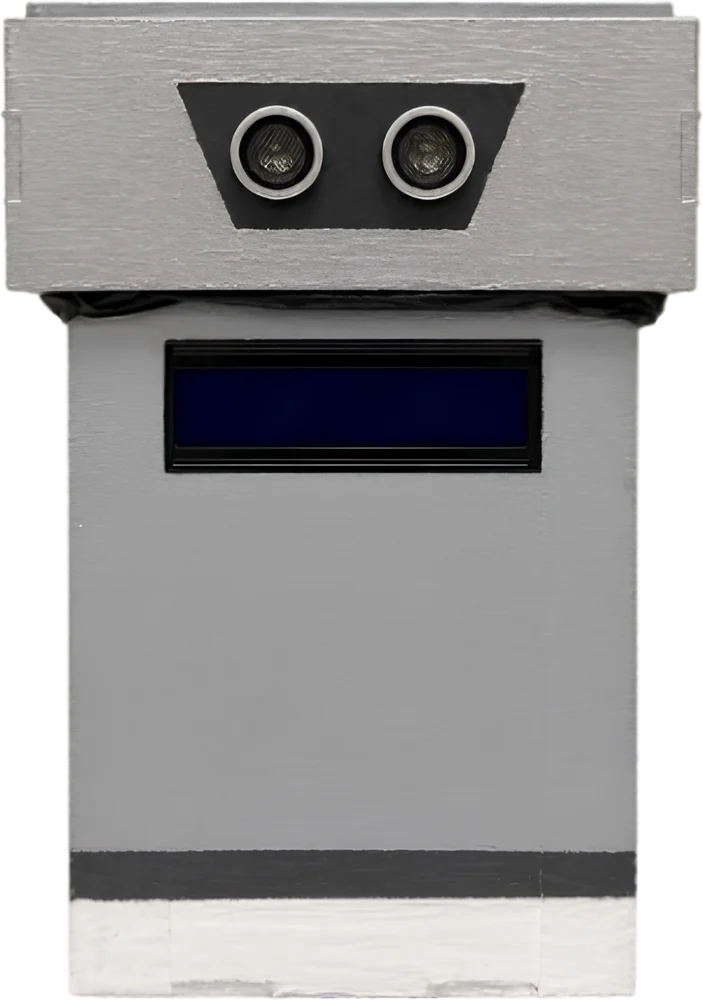
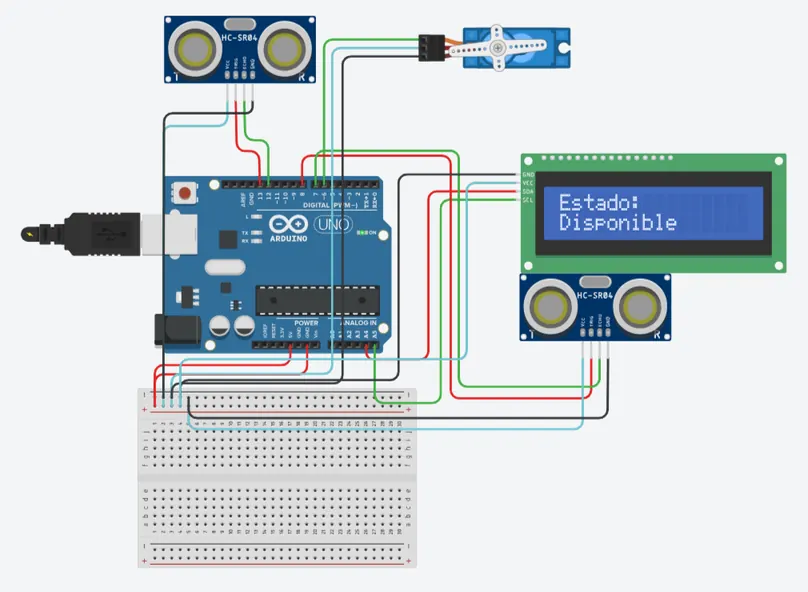
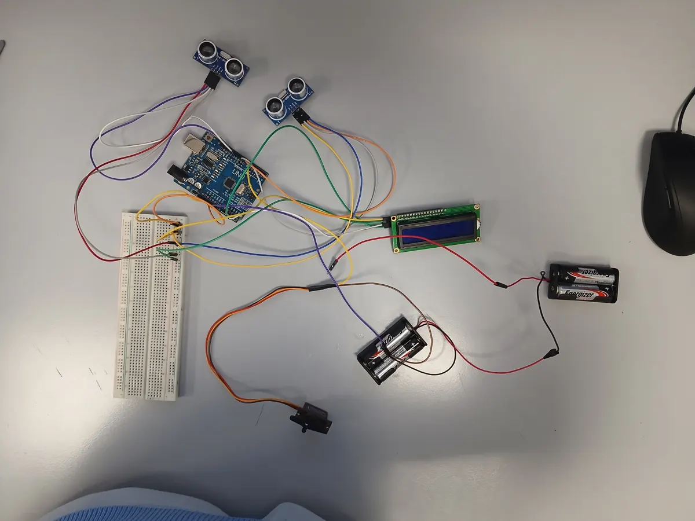
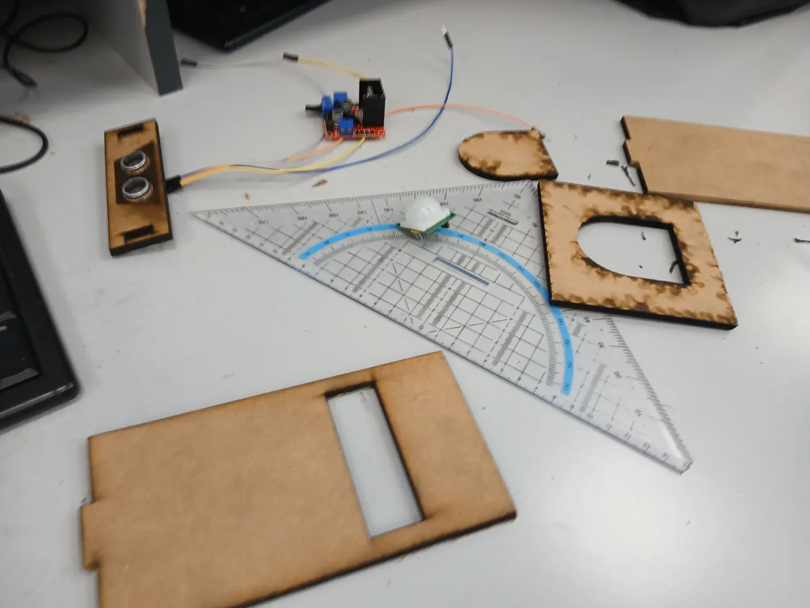
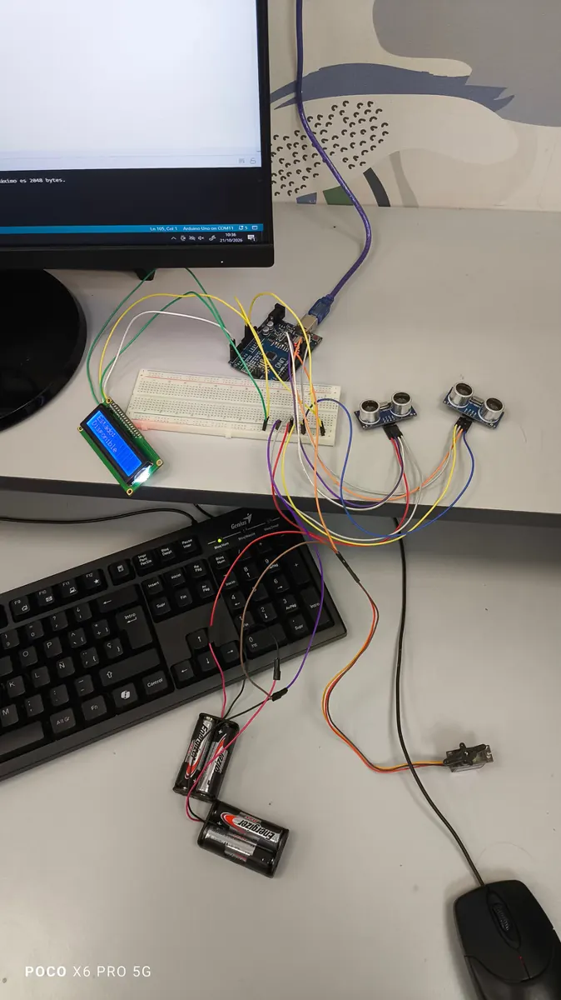
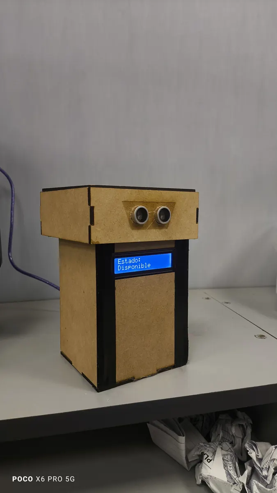
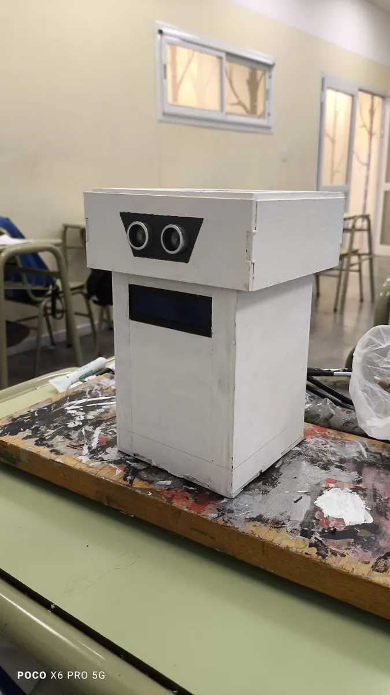
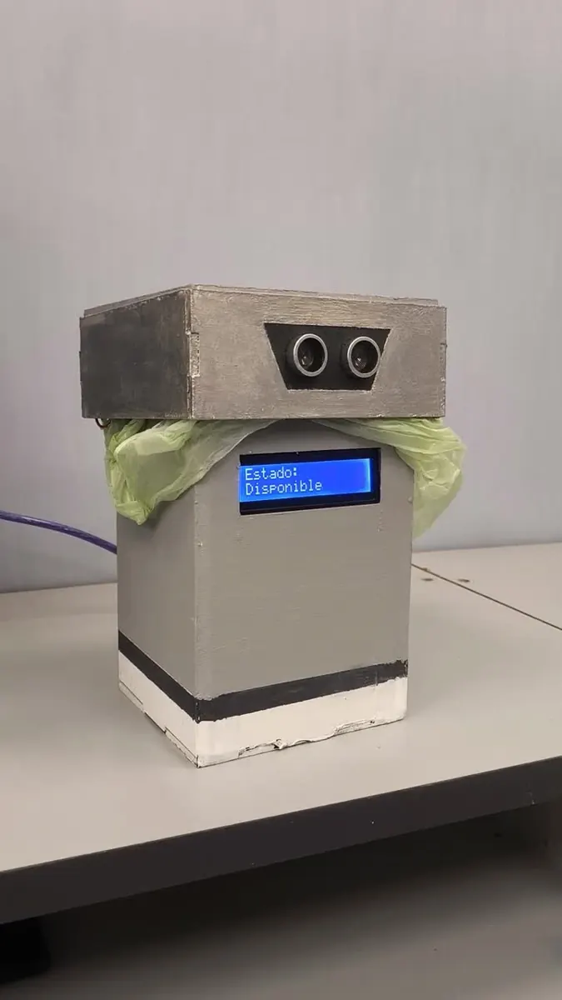

Diseño
Planeamos el circuito en el simulador antes de tocar un cable.

¿Qué es?
Acercás la mano y se abre solo. Si está lleno, te avisa en su pantalla. Más higiénico, más simple y con mucha personalidad.
Cómo funciona
Un sensor ultrasónico “ve” tu mano a menos de 20 cm.
El servomotor levanta la tapa durante 3 segundos.
El segundo sensor mira hacia adentro y mide qué tan lleno está.
La pantalla dice “Disponible” o “Lleno”. Si está lleno, no abre.
Demo interactiva
Arrastrá o tocá un residuo. Fijate cómo se abre la tapa, cómo sube el nivel… y qué pasa cuando se llena.
Disponible
El circuito


El código
Dos sensores detectan a la persona y miden el nivel. Si alguien se acerca y el tacho no está lleno, el servo abre la puerta por 3 segundos. La pantalla muestra “Disponible” o “Lleno”.
Versión resumida del programa.
void loop() {
float nivel = medir(TRIG_NIVEL, ECHO_NIVEL); // cm a la basura
float mano = medir(TRIG_MANO, ECHO_MANO); // cm a tu mano
bool lleno = nivel < UMBRAL_LLENO;
lcd.setCursor(0, 1);
lcd.print(lleno ? "Lleno " : "Disponible");
if (!lleno && mano < 20) {
tapa.write(90); // abre
delay(3000); // 3 segundos
tapa.write(0); // cierra
}
}▍El proceso
Planeamos el circuito en el simulador antes de tocar un cable.

Cortamos las piezas de MDF: el frente, la pantalla y los “ojos”.

Conectamos sensores, servo y LCD en la protoboard y programamos.

Primera versión en madera. ¡La pantalla dijo “Disponible”!

Gris metalizado, franja negra y base blanca. Nace el look.

Bolsa puesta, sensores calibrados y listo para usar.
El equipo
Instituto Agustiniano · Orientación TEC
TachoX nació en el taller de tecnología: una idea simple para que tirar la basura sea más limpio, más fácil y un poco más divertido.